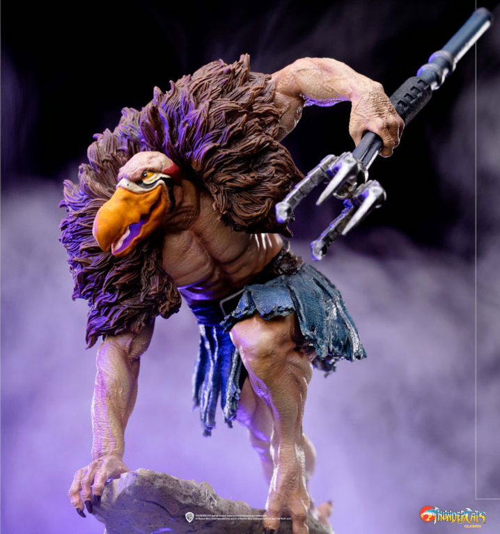
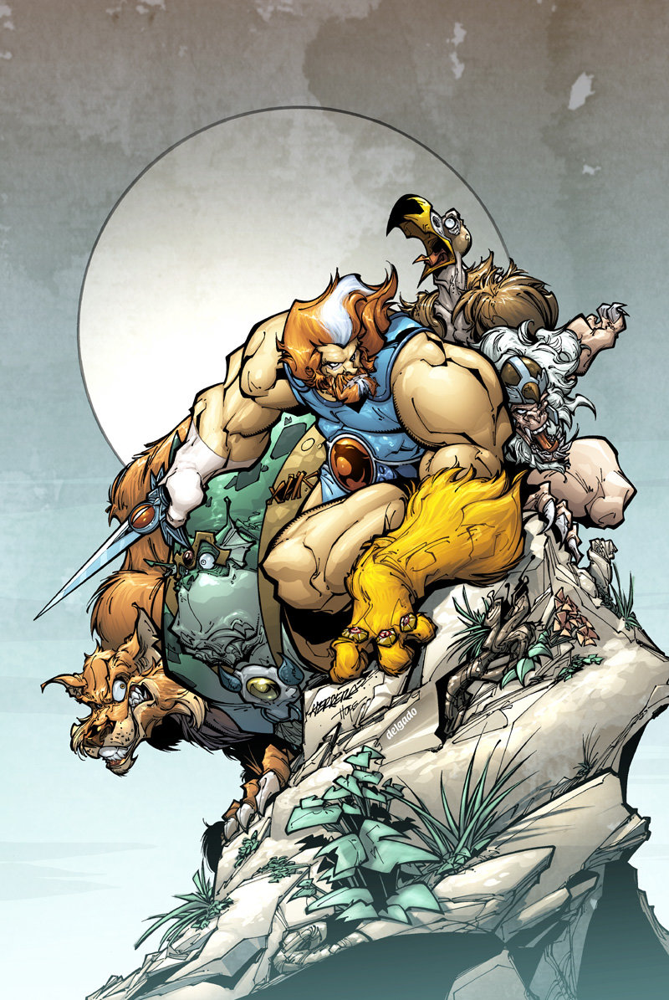
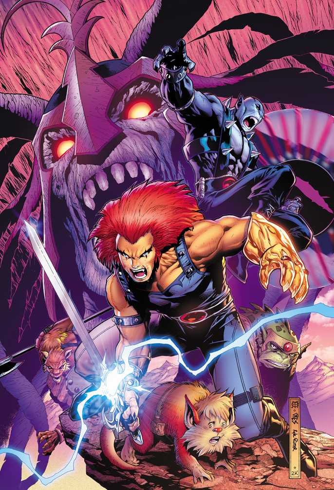

Personajes
Leono
Es el hijo de Claudus, y es el líder y Señor de los ThunderCats. La serie muestra sus aventuras desde su infancia hasta la edad adolescente/adulta en el Tercer Planeta y en Nueva Thundera, junto a sus amigos y fieles seguidores, los ThunderCats.
Pantro
Panthro es un hombre Thunderian noble y miembro de los ThunderCats. Su única debilidad es su miedo a los murciélagos. Él es el noble al lado y también mayor el segundo después de Jaga ,hasta el Lynx-O se introduce,este guerrero es el jefe de mecánicos,ingeniero y piloto de los ThunderCats.
Cheetara
No solo era una velocista, sino que también era una combatiente muy hábil. Era diestra en distintas artes marciales de Thundera y en tácticas de guerra, además de que tenía un poderoso bastón que podía crecer a longitudes increíbles, y que lanzaba rayos láser
Snarf
Es representado como una mascota robótica con forma de gato perteneciente a León-O, equipado con múltiples herramientas.

Felino y Felina
Basado también en el Gato Montés, hermana melliza de Felino acompaña a su hermano mellizo en sus travesuras en las que consisten en robar comida y dinero para poder sobrevivir ya que ambos son huérfanos.
Tigro
Es un thundercat, que posee un látigo y su personaje está basado en el Tigre. Tigro era un varón Thunderiano , arquitecto, científico y miembro de la nobleza de los ThunderCats. Se puede convertir en un ser invisible, sin embargo, esto no le impide ser visto por los fuertes detectores.

Villanos - Mutantes
Munra
Es una antigua momia que sirve a los cuatro Antiguos Espíritus del Mal y el villano principal de la serie original ThunderCats.
Reptilio
Es el lider de los mutantes y un enemigo muy peligroso de los ThunderCats. A pesar de que carece de sofisticación, puede ser muy astuto. Es el fiel siervo de Mumm-Ra en la primera temporada, el es némesis de Pantro.
Buitro
Aparentemente es a primera vista el más inteligente del grupo, posee muchas habilidades tecnológicas y suele disputarle el protagonismo a Reptilio. Es el principal aliado de Rataro cuando éste aparece. Posee un transporte aéreo en forma de buitre de color rojo.

Rataro
Rataro es uno de los comandantes de los Mutantes y capitán de Ratstar.
Chacalo
Chacalo es un chacal que fue condenado por los perros en un crimen desconocido fue rescatado por ofidio y es un general de mum-ra
Mandrilo
Mamut
Es el fiel perro de Mumm-Ra.
Galeria

